Introduction
Overview
With the capability of rapid screening, large quantity of data is generated in a considerably short period of time and we subsequently need rapid extraction of biochemical significance from the heaps of data generated. High Throughput Drug Screening allows you to rapidly screen diverse compounds, by conducting chemical, genetic or pharmacological tests and provide key insights on active compounds, genes or antibodies that regulate the bio-molecular pathway of interest. The results obtained provide a deeper understanding and present a starting point for drug design.
Scope of the app
- Automates post-processing of your data output from high throughput sequencing experiments
- Rapid visualizations of the results giving you insights about various drug-dosage combinations
- Percentage proliferation vs concentration dosage for all the drugs in the library at a glance
- Percentage proliferation difference vs concentration dosage selectivity plot for drugs and cell lines
- IC50 values
- Lethality estimation of all the drugs for the provided cell lines
- Analyze the results for a drug individually
- Download tabular representation of the post-processed results
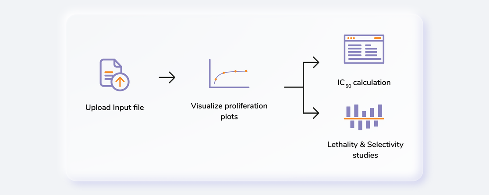
Getting Started
User Input
High Throughput Drug Screening requires the following two files as input:
RLU Sample Files
RLU files are machine generated and should not be tampered with. The second sheet of the file contains all the valuable information that the app needs as shown in Figure 2.
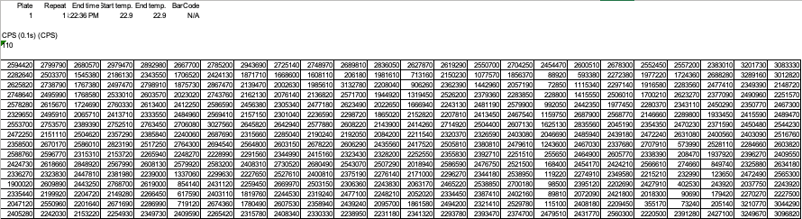
Drug Key-Dosage Files
Drug key-dosage file contains the information pertaining to the names of the drugs and their concentration values. It should contain only the drugs from one library i.e. for 40 drugs as shown in Figure 3.
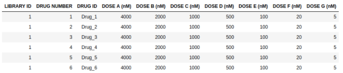
Steps in data processing
- Upload input files
- Performs visualizations for proliferation, IC50, lethality and selectivity values
Caveats
- The input file format has to be exactly same as the demo data.
Tutorial
Upload files
Select High Throughput Drug Screening Application from the dashboard under the Screening and Sequencing Data Tab.
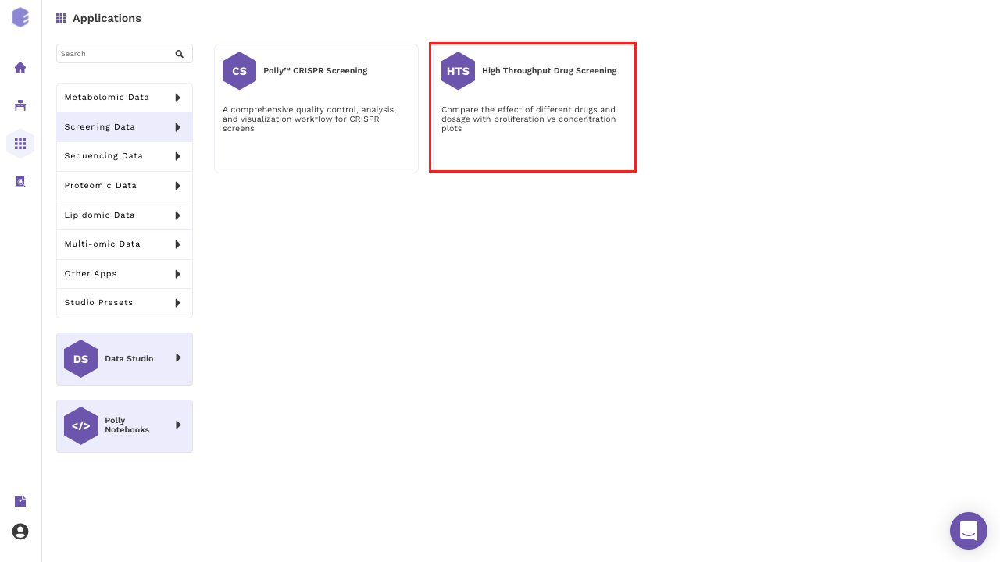
Create a New Workspace or select from the existing one from the drop-down and provide a Name of the Session to be redirected to High Throughput Drug Screening application's upload page.
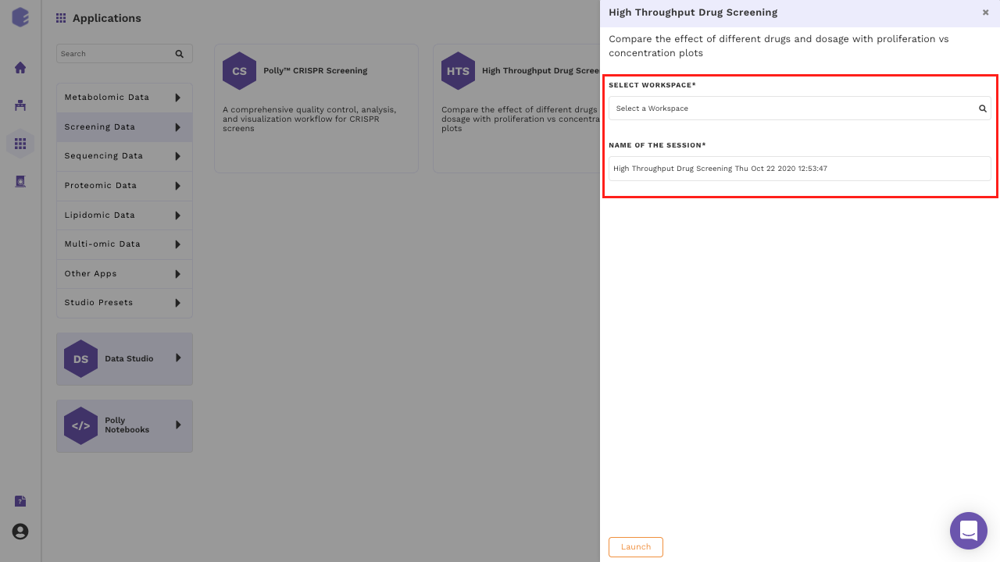
Choose no. of cell lines from the drop down as shown in Figure 6.
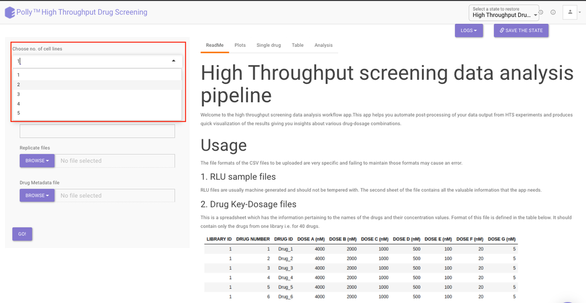
For each cell line:
- Provide a name to your cell line
- Click on the Browse option to select the input files files.
- Browse option for replicate files provides multiple file selection option so that all your replicate files can be selected and added here.
- Click on Browse to add metadata file in the metadata option. It allows only single file selection and only one metadata file would be added for one cell line.
- Repeat steps 1-4 for other cell lines if selected.
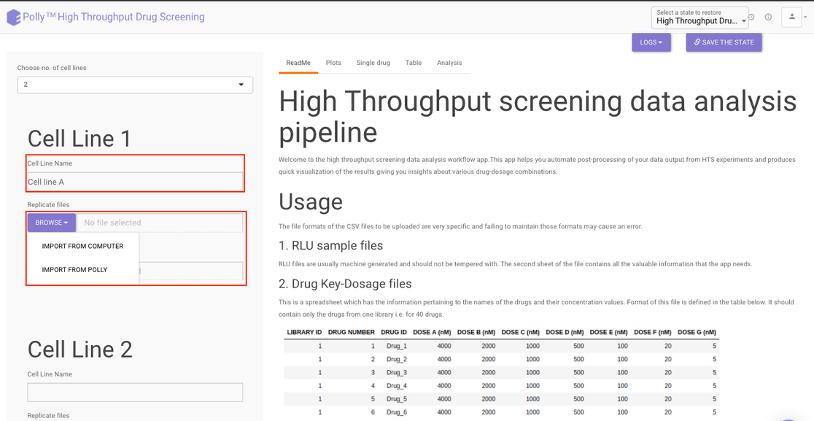
Once all the input files are selected, click on Go. You will be able to see the information of the uploaded cell lines along with their input files at the top right section of the interface.
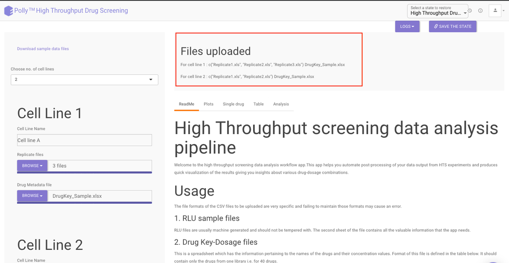
Visualization Interface
Once the input files are uploaded in the side panel, the results are generated and the plots, single drug and table tabs are populated. To see the plots click on Plots present at the top.
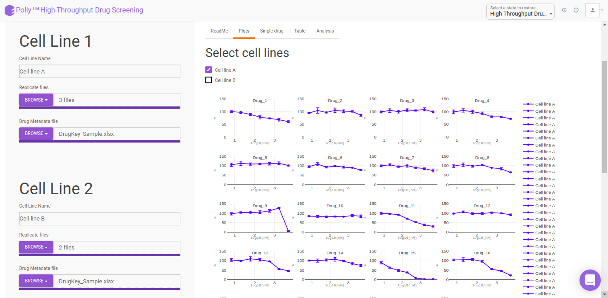
Under the Plots tab, you can see the percent proliferation vs concentration dosage for all the drugs in the library at a glance. The x-axis represents the dosage concentration values in log10 of (nM) and the y-axis represents the percent proliferation.
Choose the desired cell line by clicking on the selection box present beside the cell lines a shown in Figure 10. You can choose multiple cell lines as well and their Percent proliferation vs concentration dosage information would be overlaid on the prior plots.
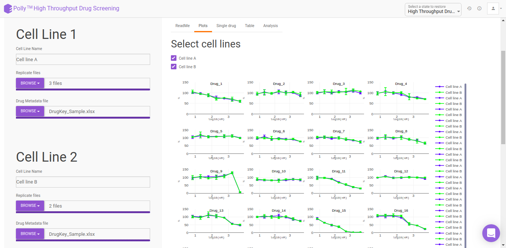
Within the plot, you can see the name of the drug at the top while different cell lines would be represented with different colors. To know the information of data points within the plot simply hover over the point you want to see.
To analyze the results for a single drug, click on the Single Drug present at the top and then select the cell line you want to analyze by clicking on the selection box beside it.
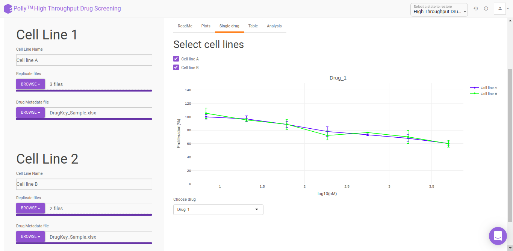
For selecting the drug, move to the bottom of the page to the Choose drug option and select the desired drug from the drop down. The plot would get updated as per your drug selection.
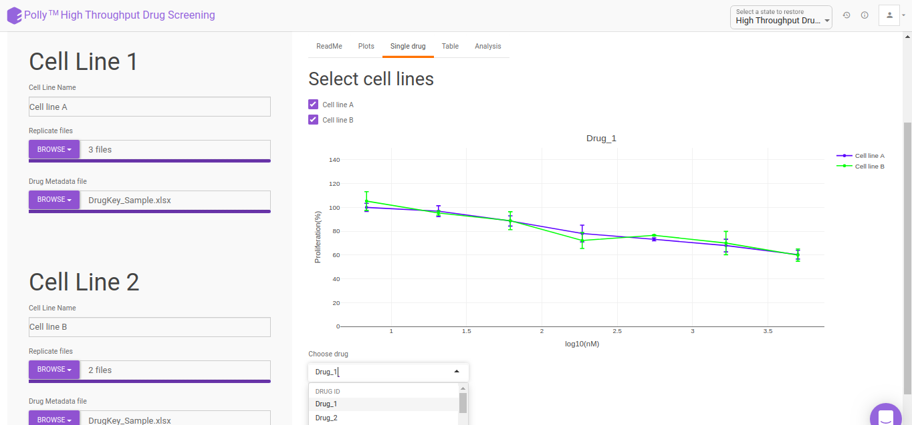
Post-Processing results
The results are available in a tabular format in the Table section. Choose your cell line to view the processed file of that cell line as shown in Figure 13.
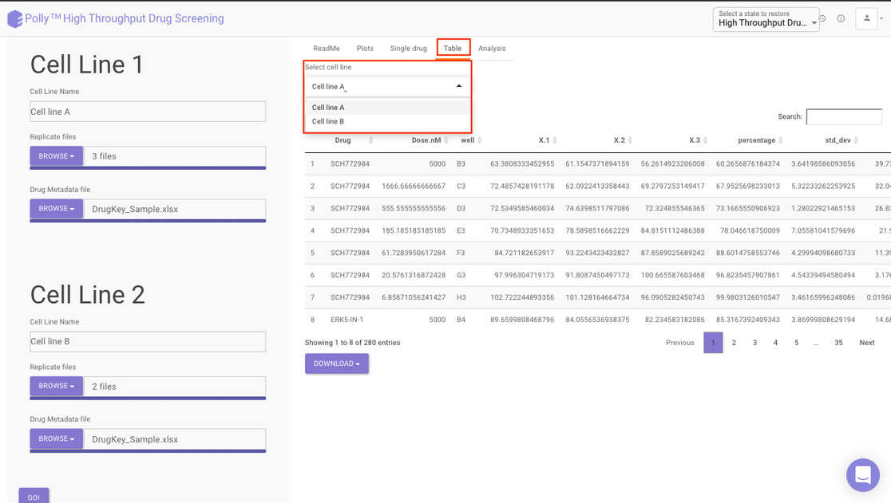
Analysis
The Analysis section provides further detailed insights in three sections:
IC50: The half maximal inhibitory concentration (IC50) is a measure of the effectiveness of a substance in inhibiting a specific biological or biochemical function. This quantitative measure indicates how much of a particular drug is needed to inhibit a given biological process (or component of a process, i.e. an enzyme or cell receptor) by half. According to the FDA, IC50 represents the concentration of a drug that is required for 50% inhibition in vitro.
Selecting a cell line from the drop down as shown in Figure 13 will display three different lists pertaining to the drugs that fall under the following categories:
- Drugs with IC50 values in the given dosage range
- Drugs with IC50 values lesser than the tested minimum dosage
- Drugs with IC50 values greater than the tested maximum dosage
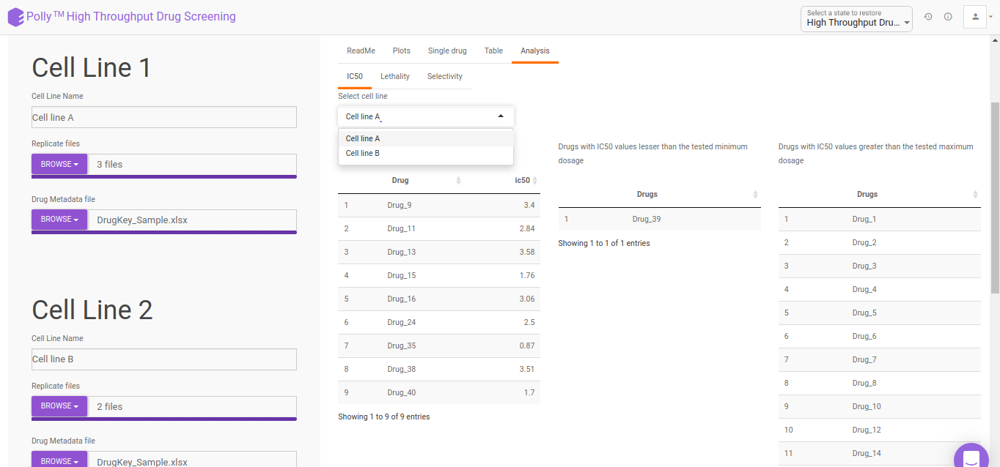
Lethality: It offers an indication of the lethal toxicity for a given drug. It provides the degree to which a drug is harmful to a user or how capable it is of causing death.
The Lethality section provides a chart showing relative lethality of drugs for all the cell lines uploaded.
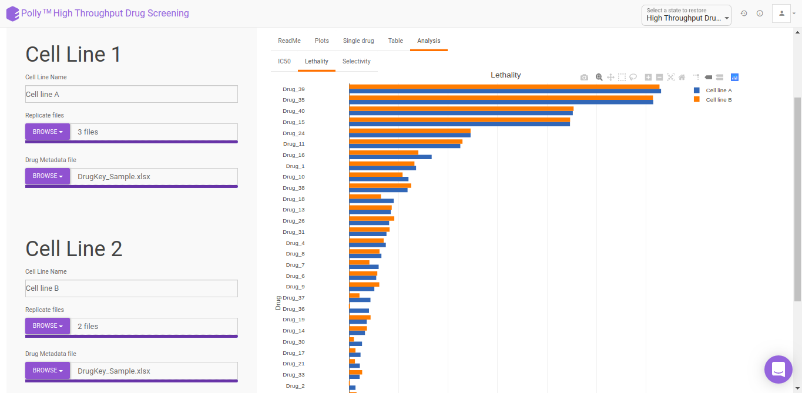
Selectivity: It refers to a drug’s ability to preferentially produce a particular effect and is related to the structural specificity of drug binding to receptors. Drug selectivity is an important aspect and is used for evaluating the ADRs (Adverse Drug Reaction) of drugs.
The Selectivity section provides a percent proliferation difference vs concentration dosage selectivity plot.
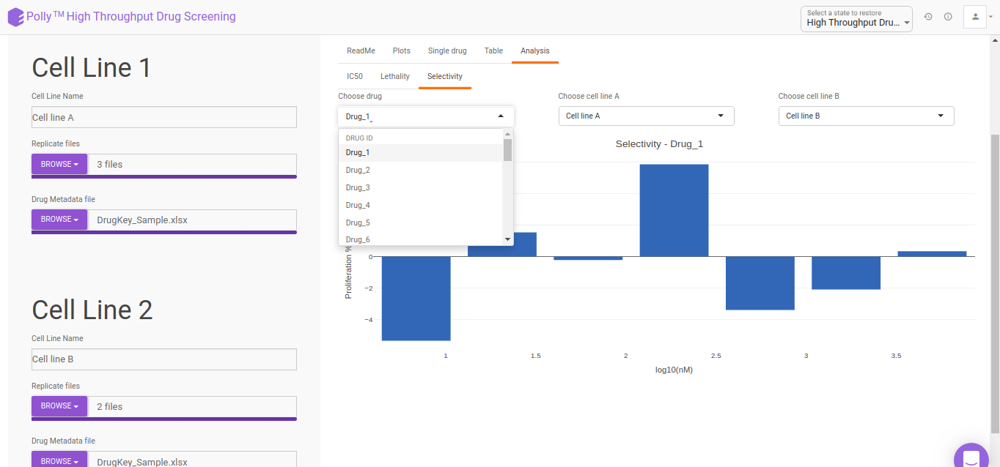
Select you desired drug as well as the cell lines to get the visualization as shown in Figure 16.